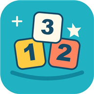

けいさんチャレンジ
足し算・引き算・掛け算を、自分のペースで。
アプリを開く →できること
トレーニングは時間制限なし。チャレンジは先生が指定した時間で取り組みます。サポート表示では丸を押しながら数えられます。
使い方
先生用の設定で計算の種類、使う数字、問題数、丸のサポート、時間、音を選びます。記録を残す場合は番号かニックネームで学習者を登録・選択してから、トップに戻って開始してください。
記録とプライバシー
アカウント登録は不要です。学習記録は利用した端末・ブラウザー内に保存し、端末間の同期はありません。ブラウザーのデータ削除などで消えることがあります。プリント採点は試作です。採点画像と点数は保存・外部送信せず、先生が確認して確定します。
利用環境
ブラウザーで利用できます。iPadではSafariで開いてください。カメラ利用時は使用許可が必要です。紙の印刷や実端末での利用は、環境に合わせて確認してください。
アプリを開く →